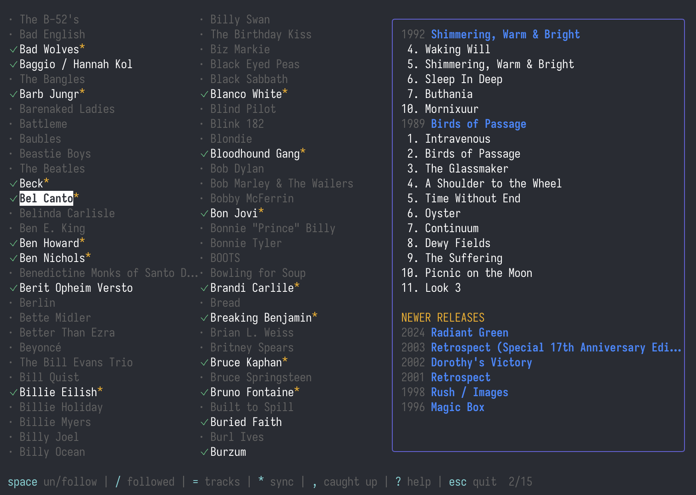

know what you're missing

A terminal app that lives in your music folder. Point it at your library and it catalogs every artist, then checks MusicBrainz for albums you might be missing.
Follow the artists you care about. Press * to sync. New releases show up right there in the terminal — no browser tabs, no subscription, no algorithm deciding what you should hear next.
scoop bucket add musup https://github.com/toba/scoop-musup
scoop install musup
Install Scoop
go install github.com/toba/musup@latest
Requires Go 1.26+